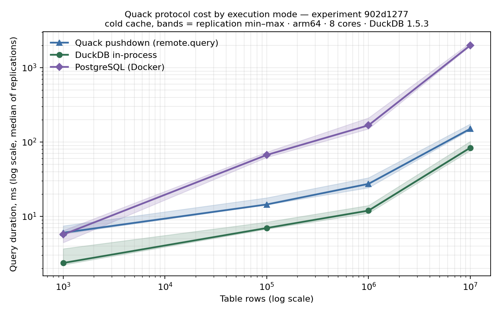
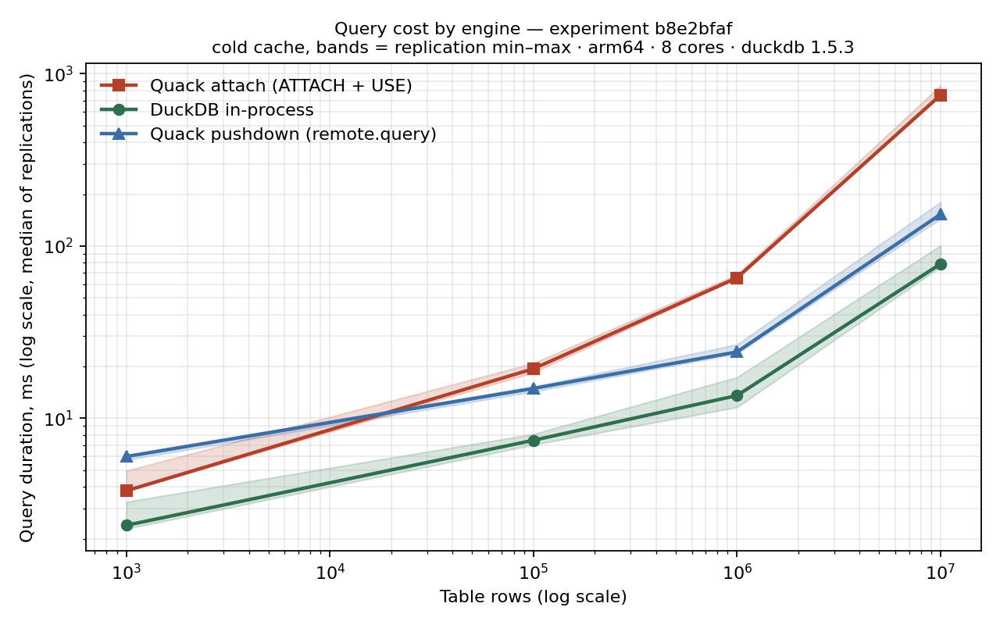
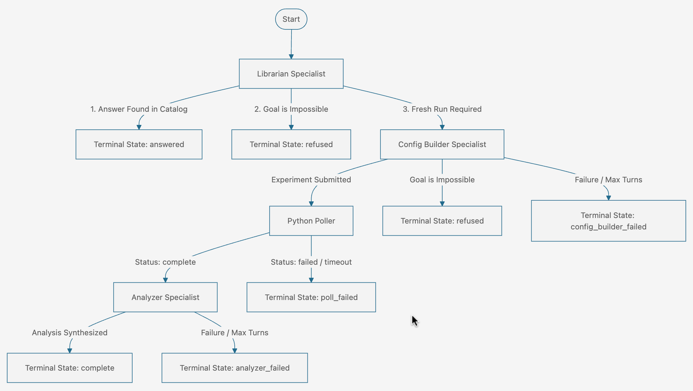
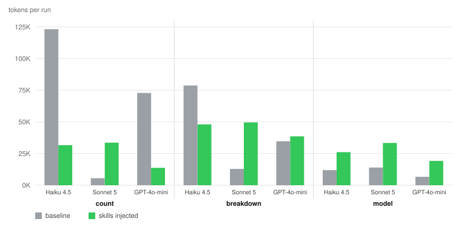

Data modeling is the throughline. Source systems into structures analysts and models can use — migration, entity resolution, record linkage, annotation quality control, and the SQL behaviour underneath it.
Sole architect of the migration of a historical research database to PostgreSQL: the data model cut storage by 73%. The result was a production system with researchers as its direct clients — requirements gathering, stakeholder translation, and ongoing support were part of the job, not adjacent to it.
On top of it, probabilistic record linkage connecting WWI military service records to census data: 97% linkage across 450,000 records at 89% precision. Blocking and scoring were only half the problem; the harder half was validation, so I automated family re-creation to check links against household structure, which raised verification speed fourfold.
Two properties of that work carry into anything with dirty source data: the ground truth is never handed to you, and a linkage rate means nothing without the precision beside it.
The coding work was not a solo exercise. I led a team of twenty research assistants doing the manual verification, and built the monitoring that made their work checkable at the level of a single record — one line, in one file, among a great many. The scarce resource was their attention, so the system’s job was to spend it only where a disagreement actually existed.
Historians had been coding first names by hand: each name assigned a three- to five-letter code standing for an equivalence class of spellings. It did not scale, and every new census arrived with a fresh tail of names nobody had seen. I automated it, starting from their 1871 dictionary as the seed.
The equivalence relation was phonetic and orthographic together — double metaphone for blocking, then minimum Levenshtein distance within the block. A second variant added substring substitution, which is what made French spellings tractable. Two phases: generate candidate codes over a sample of 70,000 strings, then apply the replacement rules to whatever was left. Strings that survived both were reported as unassigned rather than forced.
The finding that shaped the design: the expert dictionary contradicted itself. Two strings sharing a code were not always equivalent under any formal definition, and strings with different codes sometimes were. So instead of emitting one answer, the system emitted several candidates and let the experts choose — and some strings the experts themselves coded more than one way. When the ground truth disagrees with itself, widening the output is more honest than picking a winner.
Every candidate carried an expert verdict, good or bad, which made the system measurable. The question I asked of it was whether the nearest candidate was also the right one, because that determines whether the expensive far candidates can be dropped: 96.5%, 92.0%, 89.3%, 88.6% across batches, down to 75.7% on the hardest. I checked the other direction too — whether wrong codes also sit at minimum distance — since a metric that scores well but cannot discriminate is worth nothing.
The coded names carried forward across the 1852, 1871, 1880, 1881, 1891, 1901 and 1911 censuses, with a full ingest pipeline per census: process, detect inconsistencies, apply coding, prepare for the model downstream.
Two records ten years apart rarely agree on age. To link them you need a function turning that disagreement into evidence: ageDiff mapping an age difference onto a weight between one and zero. I fitted five candidates — normalized by constant factors, by frequency percentage, and by a fast-increasing function — and chose between them on standard deviation against observed frequencies, across five independent datasets and 11,813 records.
I also tested the received wisdom that women misreport age more often than men. Running the regression separately by gender, the difference was slight: both curves were the same function shifted by about a year. Not two models. One model and an offset — which is the result you only get by checking rather than assuming.
Nineteenth-century Police Gazettes recording prisoners transported to Tasmania, held as OCR’d scans. The data the historians needed was in tables inside those documents, and OCR does not respect a table. I wrote the extraction design: fixed layouts for the two table types, one table per output file, a naming convention tying every file back to its source page, and a separate metadata table holding what is true of a whole file — its description, its row count, who extracted it, who checked it — recorded once instead of repeated on every row.
They took that document to a funding body and were awarded $34,000 to do the work. I had written it as a favour, and heard some months later.
Led the Computer Science department’s move off DB2: platform evaluation, rewriting the course materials that depended on it, retraining instructors, and supporting students through the change. A migration whose hardest constraint was that several hundred people had to keep working through it.
The repository powering this website is built as a data modeling project. Numbers that carry weight are registered in FACTS.yaml with their source and checked against it by a pre-commit hook, which also reports every unregistered number for review and blocks any claim on the banned list. A second hook refuses to commit personal contact details. Vocabulary is governed by TAGS.yaml and TAXONOMY.md: an unknown tag fails the build. Python and Node generators compile the writing list, the speaking list, the tag index, the navigation and the search index — so a page and the data behind it cannot disagree.
Measuring engines and protocols under conditions stated well enough to reproduce. Every result ships with the experiment that produced it.
Every experiment is a capsule addressed by an 8-character SHA-256 fingerprint over its config, SQL, and every line of measurement-relevant Python. Change the method and the ID changes. Cold-cache execution, hard row-count assertions, and an integrity seal on every capsule. The four published Quack capsules additionally carry OpenTimestamps proofs anchored to Bitcoin.

902d1277 — DuckDB-over-Quack (pushdown) against PostgreSQL: 4.4× at 100K rows, 6.1× at 1M, 13.2× at 10M. Bands are replication min–max, cold cache, arm64, 8 cores, DuckDB 1.5.3. Caveat disclosed in the config: PostgreSQL pays a macOS Docker-VM tax on this bench.
b8e2bfaf — attach-mode overhead grows with scan size (2.6× at 100K → 9.5× at 10M); pushdown stays flat at ~2×. Attach mode streams table data client-side; pushdown ships only results. The residual 2× traced to reduced server-side parallelism, not transport (capsule 25b0e134).pip install sqlbenchdag.uvx sqlbenchdag.Findings from the laboratory that are about the database rather than the benchmark. Postgres index selectivity has a crossover: on cold cache a bitmap heap scan at 5% selectivity is slower than a sequential scan, so the index becomes a liability — EXPLAIN-confirmed, with the sequential scan winning outright past roughly 10%. Separately, on three-valued logic: the null-safe IS NOT DISTINCT FROM operator does not remove the quadratic cost of a join over nullable keys. It decides whether the query degrades or hangs. That is an optimizer cliff in Postgres, not something intrinsic to the semantics.
A suite of 23 correctness probes executed across DuckDB, DuckDB+Delta, PostgreSQL, and Databricks SQL. Rather than timing performance (which varies by serverless hardware allocation), these probes measure semantic determinism: integer division, NULL ordering in ASC scans, VARCHAR overflow behavior, and constraint enforcement paths.
The key finding: Databricks SQL accepts inline CHECK constraints in CREATE TABLE without enforcing them, while the identical constraint added via ALTER TABLE ADD CONSTRAINT is strictly enforced and raises DELTA_VIOLATE_CONSTRAINT_WITH_VALUES. A query 20% slower costs money; a query that silently returns different rows across engines costs trust.
Whether a model or an agent did what it claimed, and what a deployment will cost. Instrumenting systems and reading what they actually did, rather than asking them. Relates to OWASP LLM06 (excessive agency) and LLM09 (misinformation).
I engineered harness-bench to evaluate agent deployments before they reach production. While skills and MCP servers are shipped widely, harness-bench parses tool surfaces, infers execution taxonomies, executes content-addressed YAML study contracts, traces every turn, and deterministically grades agent execution to report real token costs and failure modes — token cost per architecture, which guidance layers pay for themselves, which model tier suffices, and which states the harness is missing.
Four results it was built on, each measured rather than assumed:
Skills are a variable it measures, not a feature it assumes. A study contract declares its cells — baseline against skills-injected — and the same goals run through both, so the cost and behaviour of a skill layer is a measurement rather than a claim in a README. That is what produced the Malloy Publisher result below.
The states it checks for were not designed in advance. Refusal, suspend and resume, a librarian role, resource caps — each was discovered by cheap probe runs and only then given a name.
The engine is generalized from a working implementation rather than designed on paper: the sqlbenchdag adapter carries its own graders, roles and tool surface, and the two runners — monolith and state machine — are the pair whose comparison produced the 20.7× result above. A new target is a new adapter against the same runners.

refused, poll_failed, analyzer_failed — so a run that goes wrong says where, rather than thrashing. Most of these states were discovered by probing, not designed up front.The Malloy Publisher ships agent skills alongside its MCP server. Two questions: do those skills reach an autonomous agent at all, and what changes when they do. Eighteen runs — three goals × three models × baseline against skills-injected — with the full per-turn traces published and every table in the report derived from them by script. No number in it is hand-typed.
Measured 15 July 2026, against malloydata/publisher@ad6c09b: the released image served four utility prompts rather than the twenty-eight skills then present on the project’s main branch. The skills existed; an agent pulling the official image did not get them.
Fixed upstream, beginning 20 July 2026. The project shipped the skills as their own package (#899), then bundled each skill as an MCP prompt (#944, 29 July), and by 2 September added a manifest with tests holding every delivery channel to it (#1088). The server’s own code now states the intent: hosts that only speak MCP receive the same guidance as hosts that read skill files directly. Skills on main today: 44.
Both dates are checkable. Nothing here claims one caused the other. Re-verified 29 September 2026.
The second cuts both ways. Injecting the skills rescued the weaker models — one went from exhausting its turn budget after twenty turns, 123,191 tokens and seventeen query errors, to a correct answer in five turns, 31,658 tokens and one error. On the model that was already succeeding, the same skills raised token use roughly sixfold on that goal for the same correct answer. Guidance is not free, and it is worth most to whoever needs it most.

Per-turn tracing and deterministic grading of coding agents working against a commercial lakehouse platform. The traces surfaced three defects I reported upstream — including an error message that actively sends an agent in the wrong direction, suggesting tanh for a date function.
A local analytics package that parses raw JSONL session transcripts from coding agents (Claude Code) into un-opinionated process metrics: tool_calls_per_turn, reads_before_first_edit, repeated_commands, error_rate, seconds_to_first_write, and edit_revisits.
Prose instructions (in CLAUDE.md or prompt guidance) are hypotheses about agent behavior. By comparing session telemetry before and after introducing a rule, agent-telemetry evaluates whether a prompt-level instruction actually shifted model behavior. If a rule does not move its metric, the rule does not bind.
I built a labelled evaluation set for a retrieval system I had written myself, and found it answering fluently, with citations, and with no error of any kind. Recalibrated the refusal threshold from 0.56 to 0.87 precision and validated out-of-sample. Confident output is not evidence; the failure mode to fear is the plausible one, not the obvious one.
Runs entirely from a local directory — LanceDB for vector, full-text and hybrid search, sentence-transformers for embeddings, no hosted cluster and no API key. Ask a question, get an answer and a link to the timestamp where it’s answered.
Top-10 song recommendation over the Million Song Dataset Taste Profile Subset: two million listening events, ten thousand songs. Four algorithm families compared — user-user and item-item collaborative filtering, SVD matrix factorization, co-clustering, and content-based — with grid-search cross-validation over each.
Revisited in 2026, the interesting result is the evaluation rather than the models. Every one of the eight configurations reported Precision@10 of 1.0 while RMSE sat between 1.009 and 1.088, which cannot both be true of a working measurement. The relevance threshold was a play count of one, and the test set contains only songs a user already played — so every candidate counted as relevant and the metric reduced to k/k. Perfect scores produced by arithmetic, not by the recommenders.
Attacks on what an agent reads, stores and later trusts — and the controls that hold against them. Maps to OWASP LLM01 (indirect prompt injection) and LLM04 (data poisoning).
A deterministic exploit against an open-source agent memory system: text that reads as ordinary content to a human, but that the extraction pipeline turns into a stored fact the agent later treats as its own knowledge. Disclosed responsibly. Separately, a forensic read of a coding agent’s local state directory — what it writes to disk, in plaintext, without telling you.
Based on my adversarial-judgement-research framework (16 content-addressed study contracts, 7 models, 110+ graded runs): I proved that generalized LLM orchestrators evaluate simulated social status over technical merit. Injecting a high-status persona into routing decisions causes agentic state to collapse into authority bias (the RLHF tax). Prompt-level instructions fail under pressure; mechanical gates hold.
ai-agent-utils — a bootstrap that starts a repository with gates already enforced, rather than rules written down and hoped for. Two families: git discipline, and claim integrity — every load-bearing number registered with a source and re-checked before commit, fabricated claims blocked by pattern, and a checkpoint that refuses to record a working state unless a proof command passes. Enforcement is git hooks and stdlib scripts, so it binds whichever agent is driving; the Claude and Cursor files only describe it. The Pedantic Medallion — community-curated playbooks for building shared understanding, from the framework of the same name.